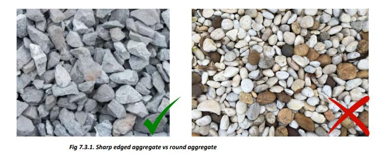

■ The stone aggregate must be from good hard rock.
■ Use stone aggregate of mixed sizes from 12mm (1/2 inch) to 20mm (¾”) in concrete for roof slabs, beams, RCC bands, and columns.
■ Store stone aggregate at a clean place and ensure that dirt and muddy water do not enter into the stack.
■ Do not use aggregates larger than 30mm size in RCC work.
■ Round aggregates from rivers have a poor bond with cement and so produce weaker concrete.